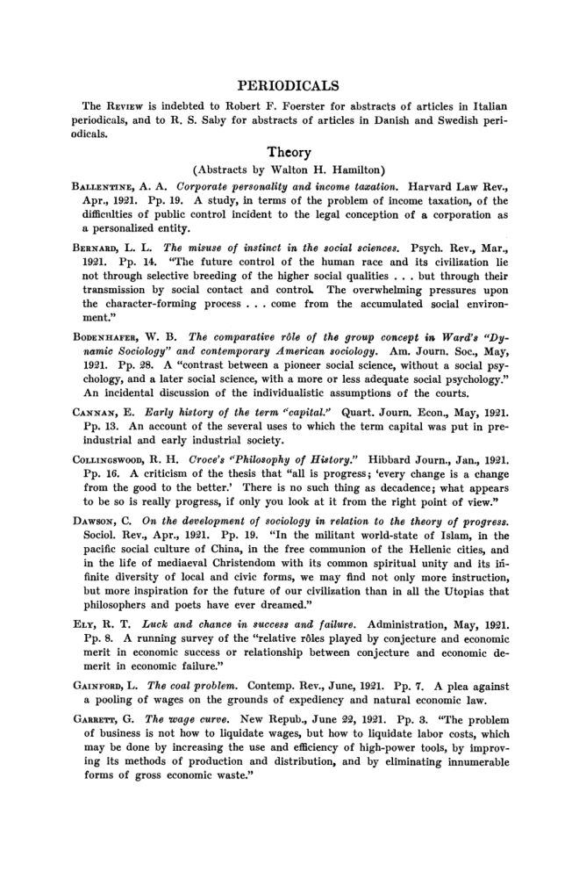

Salário real, orçamento de família e o limite da taxa de redesconto
Leitura: 16 min
Douglas e Lamberson medem o salário real até 1918; Stecker questiona os orçamentos de família usados para fixar salários; Youngman duvida que a taxa de redesconto do Federal Reserve controle o crédito.


Em 1918, uma hora de trabalho na indústria americana comprava 20,7% menos alimentos do que na média de 1890 a 1899. A conta é de Paul H. Douglas, da University of Chicago, e Frances Lamberson, de Portland, no Oregon, e abre a American Economic Review de setembro de 1921, terceiro número do volume XI. O salário-hora nominal mais que dobrara no período; os preços dos alimentos subiram ainda mais.
A edição gira em torno de uma pergunta comum: os instrumentos com que se media e se regulava a economia do pós-guerra mediam o que diziam medir? Margaret Loomis Stecker, de Nova York, examina os orçamentos de família usados nas arbitragens salariais; Anna Youngman, do Brooklyn, pergunta se a taxa de redesconto dos bancos do Federal Reserve controla de fato o crédito. George E. Putnam, de Chicago, relata a decisão da Suprema Corte sobre o sistema federal de crédito agrícola, e C. O. Ruggles, da State University of Iowa, descreve a desorganização dos terminais ferroviários dos portos. Duas comunicações curtas, de Alvin H. Hansen e Lewis H. Haney, fecham a parte de artigos.
A guerra elevou o salário real do trabalhador americano?
Paul H. Douglas (University of Chicago) e Frances Lamberson (Portland, Oregon) · “The Movement of Real Wages, 1890-1918” · pp. 409–426
Os autores continuam, para 1912 a 1918, um estudo de I. M. Rubinow que cobrira 1890 a 1912. Rubinow encontrara queda de 8,2% no poder de compra do salário-hora, medido em alimentos, entre a média de 1890 a 1899 e 1912. Para os anos seguintes, o Bureau of Labor Statistics só publicara dados de dez das quinze indústrias de Rubinow. Douglas e Lamberson testam a troca: para 1890 a 1912, dez e quinze indústrias dão resultados praticamente iguais. Os índices são emendados em 1912 e mantidos na base 1890 a 1899.
Do lado dos preços, usam as quinze mercadorias alimentares com registro contínuo, ponderadas como fazia o Bureau entre 1908 e 1912. A alimentação, lembram, responde por cerca de 40% dos gastos do trabalhador. Comparam o índice com o de 22 mercadorias do Bureau e com o custo de vida de dezoito cidades desde dezembro de 1914: no curto prazo o custo de vida fica atrás dos alimentos, porque os aluguéis demoram a subir, de modo que o índice exagera um pouco a alta de 1916 a 1918.
A perda concentrou-se em dois períodos: 1907 a 1912 e 1916 a 1917. De 1913 a 1918, o salário-hora subiu 41%, e os alimentos, 71%. Depois do salto de preços de 1916, o poder de compra da hora caiu 27,1% em dois anos; só em 1918 os salários voltaram a ganhar terreno. Os autores listam as ressalvas: a amostra exclui fábricas de munição e domésticos, que ganharam, mas também ferroviários e mineiros de carvão, que perderam; e usa tabelas sindicais. Os ganhos efetivos de Nova York e Wisconsin, que incluem horas extras, partem de bases deprimidas: em junho de 1914, 25,5% dos sindicalizados de Nova York estavam desempregados.
A conclusão: ao fim da guerra, a hora de trabalho comprava de 10% a 20% menos que na década de 1890, e a semana estabelecida, de 20% a 30% menos. O trabalho americano, escrevem, não pode ser acusado de ter lucrado com a guerra.
“Como Alice no País das Maravilhas, foi obrigado a correr mais depressa para ficar no mesmo lugar.” (“Like Alice in Wonderland, it was compelled to run faster in order to stay in the same place.”)
A Suprema Corte resolveu o futuro dos bancos de terra?
George E. Putnam (Chicago, Illinois) · “Recent Developments in the Federal Farm Loan System” · pp. 427–437
Em 28 de fevereiro de 1921, a Suprema Corte confirmou a constitucionalidade da Federal Farm Loan Act, a lei que criou os bancos federais de terra e os bancos de terra por ações (joint-stock), ambos com títulos isentos de impostos. O processo começara em julho de 1919, quando Charles E. Smith, acionista da Kansas City Title and Trust Company, tentou impedir a empresa de aplicar US$ 10.000 em títulos de cada tipo de banco. Putnam observa que o Congresso blindara a lei ao declarar os bancos depositários de dinheiro público e agentes financeiros do governo.
Essa cláusula, diz Putnam, era um subterfúgio: os senadores Hollis e Cummins admitiram no plenário que o objetivo era só baixar os juros dos agricultores, e os bancos nunca foram usados como agentes, salvo três bancos federais no verão de 1918, para empréstimos de sementes. A Corte, pelo juiz Day, apoiou-se em McCulloch v. Maryland e Osborn v. Bank: o Congresso pode criar bancos para fins nacionais, e o poder de isentar seus títulos vem junto.
“Com a sabedoria e a conveniência desta legislação nada temos a ver.” (“With the wisdom and policy of this legislation we have nothing to do.”)
Por trás do caso, segundo o autor, estavam os banqueiros de hipotecas rurais, que temiam sobretudo os bancos por ações. Em 30 de novembro de 1919 havia trinta deles, com mais de 16% dos empréstimos do sistema, concentrados nos estados agrícolas mais desenvolvidos, onde já atuavam as companhias hipotecárias. A dúvida sobre os títulos paralisou o sistema: em 1º de março de 1920 os bancos federais estavam sem recursos.
Os problemas continuam. A lei limita os juros dos títulos a 5% e o custo ao tomador a 6%, com títulos de 5% vendidos abaixo do par, e há propostas para tirar a isenção apenas dos bancos por ações. Putnam conclui que foi infeliz manter a isenção: nenhum argumento a favor dela vale para um tipo de banco e não para o outro, e, num sistema de imposto progressivo, os títulos de nenhum dos dois deveriam escapar do imposto de renda federal.
Por que os portos americanos congestionavam?
C. O. Ruggles (State University of Iowa) · “Railway Service and Regulation in Port Terminals” · pp. 438–446
Ruggles parte de um contraste. Na França, as ferrovias foram planejadas por engenheiros sob direção do governo e irradiam de Paris como raios de uma roda; nos Estados Unidos, quase não houve regulação da construção, e muitas linhas foram feitas paralelas às existentes. O resultado foi excesso de quilometragem e controle monopolista dos terminais. Ele separa as causas da ineficiência nos portos em três grupos: as ferrovias, as indústrias e a falta de previsão das autoridades.
As ferrovias duplicaram terminais caros sem coordená-los e prestaram serviços abaixo do custo para garantir o transporte de longa distância: a Baltimore and Ohio teve déficit de mais de US$ 1,25 milhão nos serviços de terminal em Nova York entre 1909 e 1911. Recusavam manobras para vagões de outras linhas e o uso de seus cais, o que, nas palavras do autor, cria tantos portos dentro de um porto quantos são os terminais de águas profundas controlados por ferrovias diferentes.
As indústrias, por sua vez, ocupam a orla profunda que deveria servir ao comércio. No North River, em Manhattan, navios de 17 pés de calado ocupam berços que caberiam a navios oceânicos de 35 pés; o diretor do Porto de Nova York propôs em novembro de 1918 transferir os vapores do Sound para o East River, poupando sessenta milhas de navegação inútil por dia. Nova Orleans, que controla toda a sua orla, e San Francisco são as exceções. Nova York é dona de quase toda a sua frente de água, mas a cedeu em arrendamentos longos.
O remédio proposto é tirar das ferrovias a propriedade individual dos terminais nos portos importantes e entregá-los a companhias de terminal sem interesse por nenhum transportador, o que não significaria necessariamente propriedade ou operação estatal. O frete seria dividido, na contabilidade, entre transporte de linha e serviço de terminal, e o poder de desapropriação, usado antes a favor das ferrovias, serviria agora para desalojar ferrovias e indústrias da orla. Ruggles duvida que a Transportation Act de 1920 baste, pois a consolidação compulsória foi retirada do texto, e pede legislação federal que mande a Interstate Commerce Commission unificar os terminais.
Um orçamento de família pode servir para fixar salários?
Margaret Loomis Stecker (New York City) · “Family Budgets and Wages” · pp. 447–465
Em julho de 1920, dezesseis estudos de orçamento familiar foram apresentados como prova à United States Anthracite Coal Commission, o tribunal que arbitrava os salários dos mineiros de antracito. Stecker toma o caso como o exame mais cuidadoso já feito da relação entre custo de vida e salário. Os mineiros defendiam um salário vital acima da subsistência; os operadores aceitavam o princípio, mas diziam que os orçamentos apresentados não eram da região e que um salário vital não é uma soma definida de dinheiro.
A autora vê duas confusões. A primeira é de padrão. Os orçamentos anteriores a 1917, como os de Chapin, foram feitos para medir o mínimo abaixo do qual uma família não deveria cair. Os novos, chamados de mínimo de conforto ou de saúde e decência, partiam das despesas de trabalhadores qualificados, de renda mais alta, e de juízos subjetivos dos pesquisadores sobre o que seria adequado; descrevem um padrão médio ideal, não um mínimo.
A segunda confusão é de lugar. Seis dos orçamentos de subsistência vinham de Nova York. Em 1918, o Bureau of Labor Statistics encontrou custo de vida médio de US$ 1.844,99 em Scranton, a única cidade do antracito pesquisada, contra US$ 1.525,66 em Nova York; nas 92 localidades estudadas, os valores iam de US$ 1.167,12 em Chippewa Falls a US$ 1.919,40 em Bisbee. Sem estudo local, conclui, nem uma aproximação grosseira é possível.
Há ainda a família-tipo: pai como único assalariado, mãe e três filhos menores de 14 anos. No censo de 1910, as famílias tinham em média 4,5 pessoas. No estudo federal de 1901, as famílias com esse perfil eram 44% do total e tinham em média 3,96 pessoas; as famílias de cinco ou mais costumam ter filhos mais velhos e outras rendas. Stecker conclui que o uso descuidado dos orçamentos desacreditou o método e pede novos padrões ou outra forma de medir o custo de vida.
Mudar a taxa de redesconto basta para controlar o crédito?
Anna Youngman (Brooklyn, N. Y.) · “The Efficacy of Changes in the Discount Rates of the Federal Reserve Banks” · pp. 466–485
Youngman começa por uma distinção: uma coisa é saber se convém restringir ou ampliar o crédito; outra é saber se a taxa de desconto do banco central é capaz de fazê-lo. Quem concorda sobre o fim pode divergir sobre o meio. Na Europa, Vissering, na conferência de Bruxelas, e McKenna, em discurso aos acionistas do London Joint City and Midland, sustentavam que a inflação monetária criada pelos empréstimos de guerra não se corrige com a taxa do banco, mas com o pagamento da dívida pública.
Nos Estados Unidos, observa, a opinião técnica e o Federal Reserve Board tratavam a eficácia como evidente. O próprio Board, porém, ora atribuía à alta de taxas um sucesso marcado, ora admitia que não havia como negar crédito a usos indesejáveis sem negá-lo também aos desejáveis. As estatísticas, diz a autora, não decidem a questão, porque os mesmos dados servem aos dois lados.
Seu argumento central é estrutural. Os juros de curto prazo pesam pouco nos custos de produção. E o sistema regional não serve a um mercado centralizado como o de Londres: atende milhares de bancos pequenos, com taxas locais ditadas pelo costume. Um banco do oeste que empresta a 8%, 10% ou 12% não deixa de redescontar por causa de uma alta fracionária.
O que contraiu o crédito em 1920, sustenta, foi a recusa direta de empréstimos e a pressão por pagamento; as altas da taxa foram apenas o anúncio de uma política mais dura. As taxas do Federal Reserve Bank de Nova York ficaram abaixo das de mercado e seguiram seus movimentos, em vez de antecipá-los.
“Meros sinais externos do início de uma política mais severa em relação aos bancos membros.” (“Mere outward signs of the initiation of a sterner policy toward member banks.”)
Para que a taxa funcione, propõe mantê-la acima das de mercado nos grandes centros e criar mercados de desconto amplos e competitivos, não baseados sobretudo em aceites bancários, com operações de mercado aberto em notas promissórias comerciais e empréstimos contra garantia de ações.
O custo da guerra pode passar às gerações futuras?
Alvin H. Hansen (The University of Minnesota) · “Shifting the War Burden”; Lewis H. Haney (New York University) · “Integration in Marketing” · pp. 486–489
A seção de comunicações traz duas notas. Na primeira, Alvin H. Hansen, da University of Minnesota, discute o discurso presidencial de Davenport, publicado no número de março. Davenport sustentara que nenhuma parte do custo de uma guerra pode ser transferida às gerações futuras: elas herdam os impostos para pagar juros e principal da dívida, mas também os títulos. O que sai de um bolso entra no outro, e a única transferência possível seria entre classes, dos portadores de títulos para o resto da sociedade.
Hansen aceita o raciocínio numa sociedade estática e o ilustra. O senhor A compra US$ 100.000 em títulos, proporcionais à sua renda, a juros de 4,5%. Recebe US$ 4.500 por ano do governo e paga US$ 4.500 em impostos de guerra, também proporcionais à renda. Os títulos nada valem para ele; o filho herda títulos e impostos e fica como estaria se o pai tivesse pago tudo de uma vez.
A pergunta de Hansen é se, numa sociedade com população, riqueza e renda crescentes, parte do ônus não passa ao futuro sem redistribuição entre classes: A continua pagando na proporção da renda, mas o aumento da renda nacional assume parte do encargo. O argumento, acrescenta, vale também com imposto progressivo.
Na segunda nota, Lewis H. Haney, da New York University, responde às críticas de L. D. H. Weld, da Swift & Co., a seu artigo “Integration in Marketing”, do número de setembro anterior. Haney diz ter sido mal interpretado: a necessidade de métodos novos e caros de comercialização, como o vagão frigorífico, justificaria em parte a integração feita pelos frigoríficos; e a Cudahy Company mostra que um frigorífico pode fazer o essencial sem o porte de Armour e Swift. Cita como propaganda excessiva um anúncio de duas páginas, em cores, de um prato de presunto com ovos, e mantém o juízo de que a integração movida pela publicidade não traz benefício público.
O que mais há na edição?
As resenhas incluem Abbott Payson Usher sobre o estudo de Herbert Heaton das indústrias de lã de Yorkshire; Lewis C. Gray sobre o livro de W. H. R. Curtler a respeito dos cercamentos ingleses; Alexander E. Cance sobre Wages and Empire, de Vyvyan Ashleigh Lyons; D. A. McCabe sobre The Frontier of Control, de Carter L. Goodrich, com prefácio de R. H. Tawney; Walter W. Stewart sobre Banking Progress, de J. Laurence Laughlin; Carl C. Plehn sobre as conferências de Columbia reunidas em The Federal Income Tax e sobre British War Finance and the Consequences, de T. J. Kiernan; John Graham Brooks sobre a crítica de Maurice Williams à interpretação econômica da história; e Willford I. King sobre The Problem of Estimation, de Correa Moylan Walsh. Seguem listas de livros novos por área, uma seção de documentos com notas sobre a lei de serviços públicos de Nova York, um relatório da Califórnia sobre concessionárias, um estudo de custo de vida de Massachusetts e um relatório sobre crédito rural em Ontário, os resumos de periódicos e as notas, com a lista de novos sócios.
Na minha leitura
Na minha leitura, o número de setembro de 1921 é um exercício sobre a distância entre o indicador e a coisa medida. Douglas e Lamberson testam se dez indústrias substituem quinze e se o preço dos alimentos representa o custo de vida antes de concluir qualquer coisa sobre o salário real; Stecker mostra que um orçamento feito para um lugar e um propósito muda de sentido quando transplantado para outro, e que a família-tipo pode descrever uma minoria.
Youngman aplica a mesma desconfiança à política monetária: uma taxa oficial que segue o mercado pode parecer eficaz sem causar nada. Ruggles e Putnam, em terrenos diferentes, tratam de regras que produzem incentivos não previstos, da isenção tributária que favorece um tipo de banco ao terminal que serve para capturar carga. E Hansen mostra como uma conclusão correta num modelo estático pode mudar quando se admite crescimento.
Glossário
- Salário real
- salário nominal dividido por um índice de preços; mede o que o salário compra.
- Ganhos semanais integrais
- salário-hora multiplicado pela jornada semanal estabelecida, sem descontar desemprego nem somar horas extras.
- Banco de terra por ações (joint-stock land bank)
- banco privado criado sob a lei de crédito agrícola de 1916, autorizado a emitir títulos lastreados em hipotecas rurais.
- Taxa de redesconto
- juro cobrado pelo banco central ao descontar títulos apresentados pelos bancos comerciais.
- Aceite bancário
- letra de câmbio que um banco se compromete a pagar no vencimento, comum no financiamento do comércio exterior.
- Empréstimo de call (call loan)
- empréstimo resgatável a qualquer momento, em geral garantido por ações e usado no mercado de bolsa.
- Família-tipo
- unidade padrão usada nos orçamentos: pai assalariado, mãe e três filhos menores de 14 anos.
Artigos (6)
- The Movement of Real Wages, 1890-1918 — Paul H. Douglas (University of Chicago) e Frances Lamberson (Portland, Oregon) (pp. 409–426) · resenha acima · JSTOR
- Recent Developments in the Federal Farm Loan System — George E. Putnam (Chicago, Illinois) (pp. 427–437) · resenha acima · JSTOR
- Railway Service and Regulation in Port Terminals — C. O. Ruggles (State University of Iowa) (pp. 438–446) · resenha acima · JSTOR
- Family Budgets and Wages — Margaret Loomis Stecker (New York City) (pp. 447–465) · resenha acima · comentário completo · JSTOR
- The Efficacy of Changes in the Discount Rates of The Federal Reserve Banks — Anna Youngman (Brooklyn, N. Y.) (pp. 466–485) · resenha acima · comentário completo · JSTOR
- Shifting the War Burden — Alvin H. Hansen (The University of Minnesota); Lewis H. Haney (New York University) (pp. 486–489) · resenha acima · JSTOR
Resenhas (9)
- Herbert Heaton, The Yorkshire Woollen and Worsted Industries — Abbott Payson Usher (Boston University) (pp. 492–494). Monografia sobre a história das indústrias de lã cardada e penteada de Yorkshire. JSTOR
- W. H. R. Curtler, The Enclosure and Redistribution of Our Land — Lewis C. Gray (pp. 494–498). História dos cercamentos e da redistribuição da terra na Inglaterra. JSTOR
- Vyvyan Ashleigh Lyons, Wages and Empire — Alexander E. Cance (pp. 512–513). Livro que liga os salários à relação entre terra agrícola disponível e população e propõe o desenvolvimento econômico do império britânico. JSTOR
- Carter L. Goodrich, The Frontier of Control: A Study in British Workshop Politics — D. A. McCabe (pp. 513–515). Estudo sobre até onde os trabalhadores britânicos reivindicaram e obtiveram controle na indústria. JSTOR
- J. Laurence Laughlin, Banking Progress — Walter W. Stewart (Amherst College) (pp. 519–521). Relato de um contemporâneo sobre a legislação bancária americana dos últimos vinte e cinco anos. JSTOR
- Robert M. Haig e outros, The Federal Income Tax — Carl C. Plehn (University of California) (pp. 523–527). Conferências feitas na Columbia University em dezembro de 1920 sobre o imposto de renda federal. JSTOR
- T. J. Kiernan, British War Finance and the Consequences — Carl C. Plehn (University of California) (pp. 527–529). Dissertação de mestrado na National University of Ireland sobre as finanças de guerra britânicas. JSTOR
- Maurice Williams, The Social Interpretation of History — John Graham Brooks (Cambridge, Mass.) (pp. 537–538). Crítica à interpretação econômica marxista da história. JSTOR
- Correa Moylan Walsh, The Problem of Estimation — Willford I. King (pp. 540–541). Uma controvérsia do século XVII e sua relação com questões estatísticas modernas, em especial os números-índice. JSTOR
Novos livros (16)
- New Books (pp. 490–492). Lista de livros novos: obras gerais, teoria e sua história. JSTOR
- New Books (pp. 498–502). Lista de livros novos: história econômica e geografia. JSTOR
- New Books (pp. 503–504). Lista de livros novos: agricultura, mineração, silvicultura e pesca. JSTOR
- New Books (pp. 504). Lista de livros novos: indústria manufatureira. JSTOR
- New Books (pp. 504–505). Lista de livros novos: transportes e comunicações. JSTOR
- New Books (pp. 505–506). Lista de livros novos: comércio e crises comerciais. JSTOR
- New Books (pp. 506–511). Lista de livros novos: contabilidade, métodos de negócio, investimentos e bolsas. JSTOR
- New Books (pp. 511–512). Lista de livros novos: capital e organização capitalista. JSTOR
- New Books (pp. 515–519). Lista de livros novos: trabalho e organizações de trabalhadores. JSTOR
- New Books (pp. 521–523). Lista de livros novos: moeda, preços, crédito e bancos. JSTOR
- New Books (pp. 529–532). Lista de livros novos: finanças públicas, tributação e tarifas. JSTOR
- New Books (pp. 532–533). Lista de livros novos: população e migração. JSTOR
- New Books (pp. 533–536). Lista de livros novos: problemas sociais e reformas. JSTOR
- New Books (pp. 536). Lista de livros novos: seguros e pensões. JSTOR
- New Books (pp. 538–540). Lista de livros novos: socialismo e empresas cooperativas. JSTOR
- New Books (pp. 541–543). Lista de livros novos: estatística e seus métodos. JSTOR
Documentos, periódicos e notas (3)
- Documents, Reports, and Legislation (pp. 544–557). Documentos oficiais, entre eles a lei de serviços públicos de Nova York, um relatório da Califórnia sobre concessionárias, custo de vida em Massachusetts e crédito rural em Ontário. JSTOR
- Periodicals (pp. 558–588). Resumos de artigos de periódicos, por área. JSTOR
- Notes (pp. 589–600). Lista de novos sócios da associação e notícias sobre economistas. JSTOR
Fontes
- The Movement of Real Wages, 1890-1918 (pp. 409–426). JSTOR · Internet Archive (PDF)
- Recent Developments in the Federal Farm Loan System (pp. 427–437). JSTOR · Internet Archive (PDF)
- Railway Service and Regulation in Port Terminals (pp. 438–446). JSTOR · Internet Archive (PDF)
- Family Budgets and Wages (pp. 447–465). JSTOR · Internet Archive (PDF)
- The Efficacy of Changes in the Discount Rates of The Federal Reserve Banks (pp. 466–485). JSTOR · Internet Archive (PDF)
- Shifting the War Burden (pp. 486–489). JSTOR · Internet Archive (PDF)
- New Books (pp. 490–492). JSTOR · Internet Archive (PDF)
- [untitled] The American Economic Review, (1921-09-01), pages 492-494 (pp. 492–494). JSTOR · Internet Archive (PDF)
- [untitled] The American Economic Review, (1921-09-01), pages 494-498 (pp. 494–498). JSTOR · Internet Archive (PDF)
- New Books (pp. 498–502). JSTOR · Internet Archive (PDF)
- New Books (pp. 503–504). JSTOR · Internet Archive (PDF)
- New Books (pp. 504). JSTOR · Internet Archive (PDF)
- New Books (pp. 504–505). JSTOR · Internet Archive (PDF)
- New Books (pp. 505–506). JSTOR · Internet Archive (PDF)
- New Books (pp. 506–511). JSTOR · Internet Archive (PDF)
- New Books (pp. 511–512). JSTOR · Internet Archive (PDF)
- [untitled] The American Economic Review, (1921-09-01), pages 512-513 (pp. 512–513). JSTOR · Internet Archive (PDF)
- [untitled] The American Economic Review, (1921-09-01), pages 513-515 (pp. 513–515). JSTOR · Internet Archive (PDF)
- New Books (pp. 515–519). JSTOR · Internet Archive (PDF)
- [untitled] The American Economic Review, (1921-09-01), pages 519-521 (pp. 519–521). JSTOR · Internet Archive (PDF)
- New Books (pp. 521–523). JSTOR · Internet Archive (PDF)
- [untitled] The American Economic Review, (1921-09-01), pages 523-527 (pp. 523–527). JSTOR · Internet Archive (PDF)
- [untitled] The American Economic Review, (1921-09-01), pages 527-529 (pp. 527–529). JSTOR · Internet Archive (PDF)
- New Books (pp. 529–532). JSTOR · Internet Archive (PDF)
- New Books (pp. 532–533). JSTOR · Internet Archive (PDF)
- New Books (pp. 533–536). JSTOR · Internet Archive (PDF)
- New Books (pp. 536). JSTOR · Internet Archive (PDF)
- [untitled] The American Economic Review, (1921-09-01), pages 537-538 (pp. 537–538). JSTOR · Internet Archive (PDF)
- New Books (pp. 538–540). JSTOR · Internet Archive (PDF)
- [untitled] The American Economic Review, (1921-09-01), pages 540-541 (pp. 540–541). JSTOR · Internet Archive (PDF)
- New Books (pp. 541–543). JSTOR · Internet Archive (PDF)
- Documents, Reports, and Legislation (pp. 544–557). JSTOR · Internet Archive (PDF)
- Periodicals (pp. 558–588). JSTOR · Internet Archive (PDF)
- Notes (pp. 589–600). JSTOR · Internet Archive (PDF)
- Sumário da edição no JSTOR: The American Economic Review, vol. 11, nº 3.
Documento em domínio público (EUA, publicado antes de 1931), via JSTOR Early Journal Content e Internet Archive. Resumo e comentário do autor deste site, sem afiliação com a American Economic Association. Encontrou um erro? Escreva: a correção é publicada no próprio texto, com data.
← Nº 170 · Miller, o Federal Reserve e a comercialização agrícola Nº 172 · Gregg, a frota do governo, os ciclos de greves e a regulação de preços →